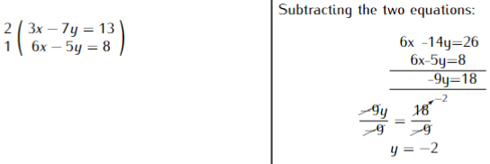
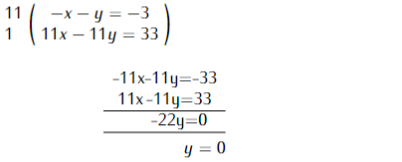

Chapter 15: Linear Equations
Linear Equations
Linear equations are equations of straight lines involving one or two unknown variables. A system of two linear equations forms simultaneous equations.
There are three methods used to solve simultaneous equations:
- Elimination method
- Substitution method
- Graphical method
Solved examples
Substitution method
Substituting equation (ii) into (i);
\[\begin{align*} 2x - 3(2x + 7) & = -13 \\ 2x - 6x - 21 & = -13 \\ -4x & = -13 + 21 \\ \frac{\cancel{-4}x}{\cancel{-4}} & = \frac{\cancelto{-2}{8}}{\cancel{-4}} \\ x & = -2 \end{align*}\]Elimination method
To eliminate x multiply equation (i) by 2 and (ii) by 1 and then subtract (ii) from (i);

Plugging y=-2 in (i) or (ii) to determine the value of x;
\[\begin{align*} 3x-7(-2)&=13\\ 3x+14&=13\\3x&=-1\\ \frac{\cancel{3}x}{\cancel{3}}&=-\frac{1}{3}\\ x&=\frac{-1}{3}\\ Solution\, set&=(-\frac{1}{3},-2) \end{align*}\]Solve the following linear equations \((4mks)\)
\[\frac{x+y}{6}-\frac{x+y}{4}=-\frac{1}{4}\] \[\frac{x-y}{5} + \frac{x-y}{6}=1\frac{1}{10}\]
Simplifying the two equations;
Multiply the 1st equation by 12;
\[\left(\frac{x+y}{6}-\frac{x+y}{4}=\frac{-1}{4}\right)12\] \[2x+2y-3x-3y=-3\] \[-x-y=-3 \,\ldots \ldots\ldots(i)\]
Multiply the 2nd equation by 30;
\[\left(\frac{x-y}{5}+\frac{x-y}{6}=\frac{11}{10}\right)30\] \[6x-6y+5x-5y=33\]
\[11x-11y=33 \, \ldots\ldots\ldots (ii)\]
Multiply equation (i) by 11 and add to equation (ii) to eliminate x;

Plugging \(y= 0\) in (i) or (ii) to determine the value of x;
\[\begin{align*} -x-y(0)&=-3\\ -x&=-3\\x&=3\\ \therefore Solution \,set&=(3,0) \end{align*}\]- Solve the following equations \((4mks)\)
- Solve the simultaneous equations. \((3mks)\)
- Solve the simultaneous equations: \((3mks)\)
Mercy a student at Mucagara mixed Secondary bought 5 pens and 3 exercise books from Magunas supermarket at Ksh. 135, at the same time Murugi her class mate also bought 4 pens and 5 exercise books and spent Ksh. 25 more than Mercy. Find the cost of each pen and exercise book. \((4mks)\)
In July, Kiama donated \(\frac{1}{6}\)th of his salary to a children’s home while Joshua donated \(\frac{1}{5}\)th of his salary to the same children’s home. Their total donation for July was \(Ksh.\, 14,820\). In August, Kiama donated \(\frac{1}{8}\)th of his salary to the children’s home while Joshua donated \(\frac{1}{12}\)th of his salary to the children’s home. Their total donation for August was \(Ksh.\, 8,675\). Calculate Kiama’s monthly salary. \((4mks)\)
Three spoons and four plates cost \(Ksh. \,87\). Two spoons and five plates cost \(Ksh.\, 93\). Find the cost of one spoon and one plate. \((4mks)\)
Mwendia bought 8 pairs of trousers and six socks at \(Ksh.\, 4,160\). Had he bought twice as many socks and half as many trousers, he would have saved \(Ksh.\, 100\). Find the cost of each item. \((3mks)\)
Esther bought 144 mangoes at \(Ksh.\, 100\) for every six mangoes. She sold some of them at \(Ksh.\, 72\) for every three and the rest at \(Ksh.\, 60\) for every two. If she made a 45% profit, calculate the number of mangoes sold at \(Ksh.\, 72\) for every three. \((3mks)\)
Four men took their cows to the market. John had two more cows than Enoch. Alex had as many cows as John, whereas Jeff had 10 cows less than the sum of both John and Alex.
a) Write a simplified expression with one variable, representing the total number of cows. \((1mk)\)
b) Three butchers bought all the cows and shared them equally. If each butcher got 17 cows, how many did Jeff sell to the butchers \((3mks)\)
Wanjiru bought three cups and four plates for Ksh. 324. Moraa bought five cups and Anyango bought two plates of the same type as those bought by Wanjiru. Moraa paid \(Ksh.\, 228\) more than Anyango. Find the price of each cup and spoon. \((3mks)\)
Daniel and Sokoro bought the same types of pens and blades from the same shop. Daniel bought 2 pens and 3 blades for \(Ksh.\, 78\). Sokoro bought 3 pens and 4 blades and spent \(Ksh.\, 36\) more than Daniel. Calculate the cost of each item \((3mks)\)
Karani bought 4 pencils and 6 blades for \(Ksh.\, 66\) and Kanuni bought 2 pencils and 5 blades for \(Ksh.\, 51\).
a) Find the price of each item. \((3mks)\)
b) Naomi spent Ksh. 228 to buy the same type of pencils and blades. If the number of blades she bought was 4 more than the number of pencils, find the number of pencils bought. \((3mks)\)
A retailer bought 50 plates and 30 spoons from a wholesaler P for \(Ksh.\, 4260\). Had she bought 15 plates less and half spoons more, she would have paid \(Ksh. \,990\) less. Had the retailer bought from wholesaler Q, she would have paid 50% more for a plate and 25% less for a spoon. How much would she have lost if she had bought the 50 plates and the 30 spoons from wholesaler Q.? \((10mks)\)